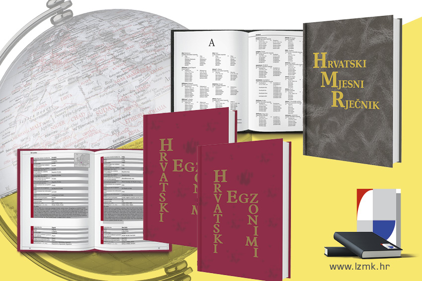

Povjerenstvo za standardizaciju geografskih imena prihvatilo je u svibnju 2020. Preporuke za standardizaciju geografskih imena u Republici Hrvatskoj – pisanje i uporaba geografskih imena iz stranih jezika i Preporuke za standardizaciju geografskih imena u Republici Hrvatskoj – imenovanje naselja, ulica i trgova. U studenome 2020. poduprla ih je Koordinacija za gospodarstvo Vlade Republike Hrvatske. Tim smo povodom razgovarali s predstavnicom Leksikografskoga zavoda u Povjerenstvu i dugogodišnjom članicom Radne skupine za egzonime unutar Skupine stručnjaka za zemljopisna imena pri UN-u te urednicom Hrvatskih egzonima – dr. sc. Ivanom Crljenko.
Koja je svrha preporuka i kako će se javnost upoznati s njima?
Svrha je ovakvih preporuka stvoriti temelj za standardizaciju zemljopisnih imena, kojim će se u konačnici osigurati njihova dosljedna, sustavna i ujednačena primjena u javnoj uporabi. Dosad su donesene preporuke koje se odnose na imena naselja, ulica, trgova te imena iz stranih jezika. Planiraju se pripremiti i one za druge vrste imena, i to ili pojedinačno – npr. za imena prometnica, građevina, otoka, reljefnih oblika, kopnenih voda i dr. – ili skupno, tj. za sva izvorna imena. Kako bismo ih što bolje predstavili javnosti i time podignuli svijest o izazovima vezanima uz zemljopisna imena, osobito uz postupak njihove standardizacije, Državna geodetska uprava – kao matična ustanova Povjerenstva i državna upravna organizacija nadležna za održavanje i vođenje registra zemljopisnih imena – dvije je navedene preporuke u siječnju ove godine dostavila tijelima državne uprave, svim samoupravnim jedinicama i institucijama iz područja znanosti, obrazovanja i kulture koje se znatnije služe zemljopisnim imenima.
Čime se, osim donošenjem preporuka za standardizaciju zemljopisnih imena, bavi Povjerenstvo i kakav mu je sastav?
Među ostalim, Povjerenstvo prati provedbu propisa o naseljima u segmentu vezanom uz zemljopisna imena, provodi reviziju zemljopisnih imena i donosi preporuke za poboljšanje registra zemljopisnih imena. Sastavljeno je od stručnjaka iz područja geografije, geodezije, kartografije, jezikoslovlja, leksikografije, kulture i povijesti, a po potrebi može imati pridružene članove užih specijalnosti (npr. poznavatelje imena reljefnih oblika, otočnih i obalnih imena ili toponimije određenoga prostora). Napomenula bih da je ovo prvo povjerenstvo koje se bavi zemljopisnim imenima u Hrvatskoj. Imenovala ga je 2019. Vlada RH po uzoru na slična povjerenstva u drugim državama. Budući da smo na početku svojega rada, tek se uhodavamo, još uvijek nam je u fokusu donošenje temeljnih dokumenata, poput ovih općih preporuka.
Zašto je uopće važno imati standardizirana zemljopisna imena?
Standardizirana, dakle, jedinstvena, točna i dosljedna zemljopisna imena imaju višestruku praktičnu korist. Njima se nedvosmisleno označuje određeni zemljopisni objekt, čime se olakšava orijentacija te omogućuje učinkovita i pravodobna komunikacija. Stoga su takva zemljopisna imena potrebna svim akterima koji djeluju u prostoru i na prostor, kao što su lokalne, nacionalne i međunarodne organizacije koje se bave zračnim, pomorskim i poštanskim prometom, trgovinom, upravljanjem u kriznim situacijama i spašavanjem, sigurnosnim strategijama, mirovnim operacijama, automatskom navigacijom, ali i administracijom, urbanim i regionalnom planiranjem, demografskom statistikom i održivim upravljanjem okolišem. Korist imaju i nakladnici atlasa, karata, školskih udžbenika, leksikona, enciklopedija i drugih izdanja koja u velikoj mjeri rabe zemljopisna imena. Primjerice, u slučaju kada postoji više inačica istoga imena – a to se događa prilično često – izrađivači bi trebali rabiti standardizirano ime, odnosno ne bi se morali domišljati vlastitim kriterijima odabira određene inačice, što je inače vrlo nezahvalno.
Kakva je uloga Leksikografskoga zavoda u standardizaciji zemljopisnih imena?
Bez sustezanja mogu reći – velika. U njegovih sada već 70 godina postojanja zavodski urednici, osobito općih enciklopedija i leksikona te atlasa svijeta, donosili su i primjenjivali pravila pisanja zemljopisnih imena i na taj ih način donekle normirali. Kad god je to bilo potrebno, pravila su isticali u predgovorima svojih izdanja. Posvetivši im, dakle, osobitu pozornost, u javnosti su posredno oblikovali svijest o njihovoj važnosti. Utjecali su i na tretman zemljopisnih imena – npr. treba li davati prednost izvornim ili prilagođenim imenima – i, vrlo konkretno, na prihvaćanje ili odbacivanje pojedinih imenskih inačica. Usudim se stoga reći da je Zavod jedina institucija koja dugotrajno i uporno radi na usustavljivanju velikog broja zemljopisnih imena, osobito onih manje poznatih. Dokaz tomu je činjenica da imena iz zavodskih izdanja služe kao mjerodavni predlošci drugim korisnicima – nakladnicima, medijima, prevoditeljima i dr. Osim toga, upravo je dva novija zavodska izdanja, uz spomenuti registar zemljopisnih imena, Povjerenstvo prepoznalo kao vrijedna polazišta za standardizaciju.
Možete li nam reći malo više o njima, osobito o onome na kojem ste Vi radili?
Prvo izdanje je Hrvatski mjesni rječnik, glavne urednice dr. sc. Nataše Bašić-Kosić, u kojem su obrađena imena naseljenih mjesta u Hrvatskoj, njihovih stanovnika i odnosni pridjevi. Drugo se sastoji od dva tiskana i mrežnog izdanja Hrvatskih egzonima, u kojima smo popisali i preporučili naše egzonime, tj. prilagođena zemljopisna imena iz stranih jezika. U prvome tiskanom izdanju preporučili smo imena država, glavnih gradova i ovisnih područja te iz njih neke izvedene oblike riječi, a u drugome smo popisali suvremene i povijesne egzonime svih zemljopisnih objekata – država, gradova, regija, rijeka, planina, jezera, naselja, mora i dr. Mrežno izdanje dopunili smo inačicama egzonima koje smo pronašli u više od dvadeset izvora. Osim preporučenih imena, iscrpno smo objasnili načela za preporuke prilagođenih imena, a istaknuli smo i na neke zanimljivosti vezane uz njih – npr. po kome je nazvana Bolivija, kako se nazivaju stanovnici Bejruta ili Lesota, zašto je bolje pisati Kalifornija, a ne California, zašto je pravilno uporabiti oba zemljopisna imena, i Latvija i Letonija, i sl.
Imate li u planu nove projekte i možete li ih već sada najaviti?
U kartografskoj redakciji intenzivno radimo na pripremi projekta o hrvatskim županijama, gradovima i općinama, koji će započeti u ožujku. Zamislili smo ga kao mrežno izdanje u kojem će se leksikografskim tekstovima, kartama gradova i općina u jedinstvenom mjerilu 1 : 100 000 i planovima gradova te grafičkim prilozima predstaviti geografska obilježja i povijesni razvoj svih jedinica područne (regionalne) i lokalne samouprave. Dakle, zemljopisnih imena i u ovom će projektu biti napretek.
Kolegice Crljenko, hvala Vam na razgovoru i vrijednim informacijama. Želimo Vam mnogo uspjeha u budućim istraživanjima i javnome djelovanju.